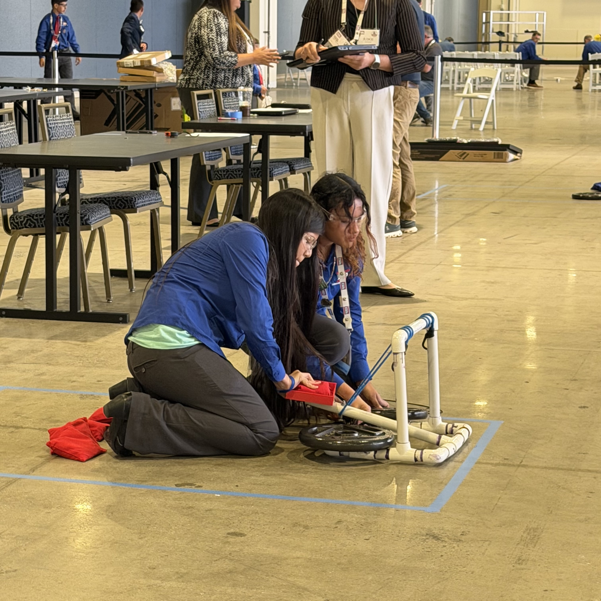

Design and build
Design and build
Explore events where you develop a design, make a model or device, and show how it works.

Individual · On-site CAD drawing
CAD Foundations
You will use design software to draw an engineering part accurately.
Explore CAD FoundationsTeam of 2–6 · Scale model, display, and portfolio
Construction Challenge
You will design a community greenhouse and garden for a narrow city site.
Explore Construction ChallengeIndividual · Race car, drawing, and materials list
Dragster
You will design and build a small CO₂-powered race car.
Explore DragsterIndividual · Glider, portfolio, and on-site rebuild
Flight
You will design a glider that stays in the air as long as possible.
Explore FlightTeam of 2–4 · Model or prototype, display, and possible sales pitch
Inventions and Innovations
Your team develops an invention or improves an existing idea to meet a real need.
Explore Inventions and InnovationsTeam of 3–6; up to 3 present · Matching products, portfolio, and possible presentation
Mass Production
Your team develops a repeatable production process and uses it to make matching products.
Explore Mass ProductionTeam of 2 · Device + portfolio
Mechanical Engineering
Build a catapult that hits its target.
Explore Mechanical EngineeringIndividual or team of 2–6; 1–3 representatives present · Display, model, portfolio, and possible presentation
Off the Grid
You will design a home or home system that responds to a community's needs and limited public utilities.
Explore Off the GridTeam of 2–4 · Model car, showcase display, race trials, and possible interview
Solar Racer
Your team builds a solar-powered model car and documents how it performs.
Explore Solar RacerTeam of 2 · Pre-built structure, documentation, and possible on-site build
Structural Engineering
Your team builds a lightweight structure and tests how much load it can support.
Explore Structural EngineeringTeam of 2 · Twenty-four-hour design portfolio challenge
Technical Design
Your team develops and documents an engineering design in response to a new problem.
Explore Technical Design